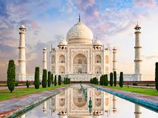
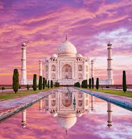
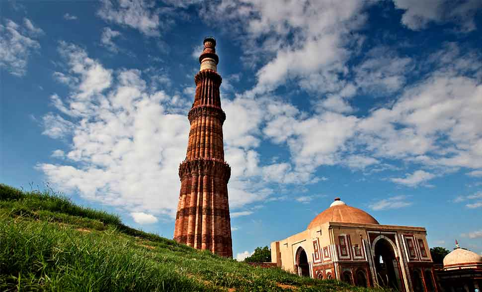
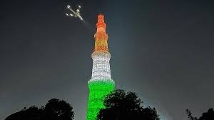
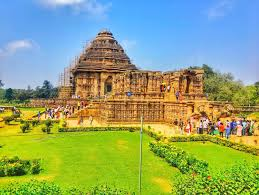
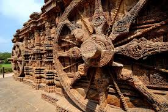
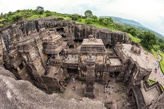
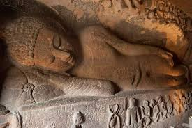
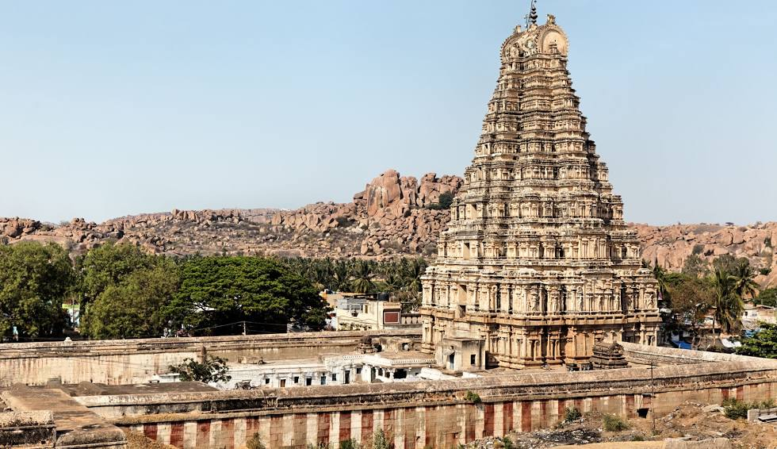
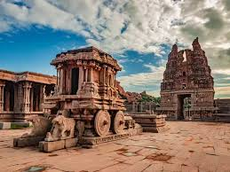

⮚ Built in the 17th century by Mughal Emperor Shah Jahan in memory of his wife Mumtaz Mahal, the Taj Mahal is an architectural masterpiece made of white marble.
⮚ It represents the pinnacle of Mughal architecture and stands as a universal symbol of love, drawing millions of visitors from around the world.
More information about this festival :- Click Here


⮚ Commissioned in 1193 by Qutb-ud-din Aibak, the Qutub Minar is the tallest brick minaret in the world, built to celebrate Muslim dominance in Delhi.
⮚ Surrounded by ancient ruins, it marks the beginning of Indo-Islamic architecture in India.
More information about this festival :- Click Here


⮚ Constructed in the 13th century by King Narasimhadeva I, the Konark Sun Temple is designed as a giant stone chariot dedicated to Surya, the Sun God.
⮚ Its intricate carvings and astronomical design make it a marvel of ancient Indian engineering and devotion.
More information about this festival :- Click Here


⮚ Spanning from the 6th to 10th centuries, the Ellora Caves feature rock-cut temples and monasteries of Hinduism, Buddhism, and Jainism carved into basalt cliffs.
⮚ The most famous, the Kailasa temple, was carved from a single rock, showcasing India's spiritual diversity and extraordinary craftsmanship.
More information about this festival :- Click Here


⮚ Once the flourishing capital of the Vijayanagara Empire, Hampi thrived between the 14th and 16th centuries as a center of art, religion, and commerce.
⮚ Its majestic temples, stone chariots, and ruins reflect the grandeur of one of South India's most powerful empires.
More information about this festival :- Click Here